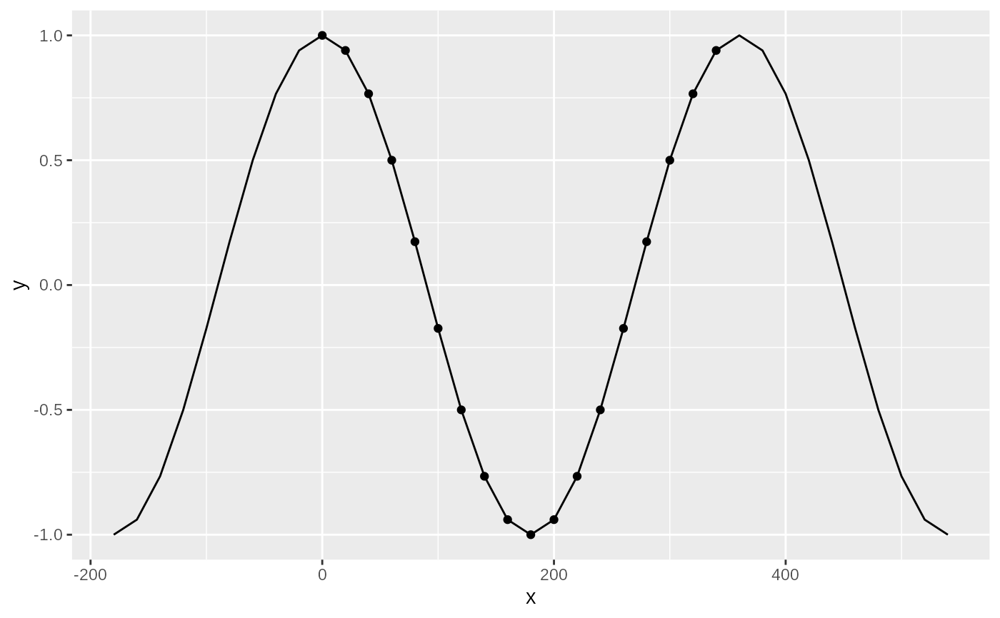
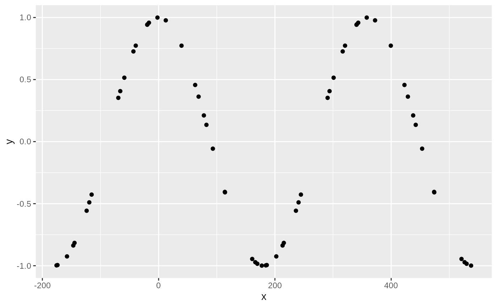
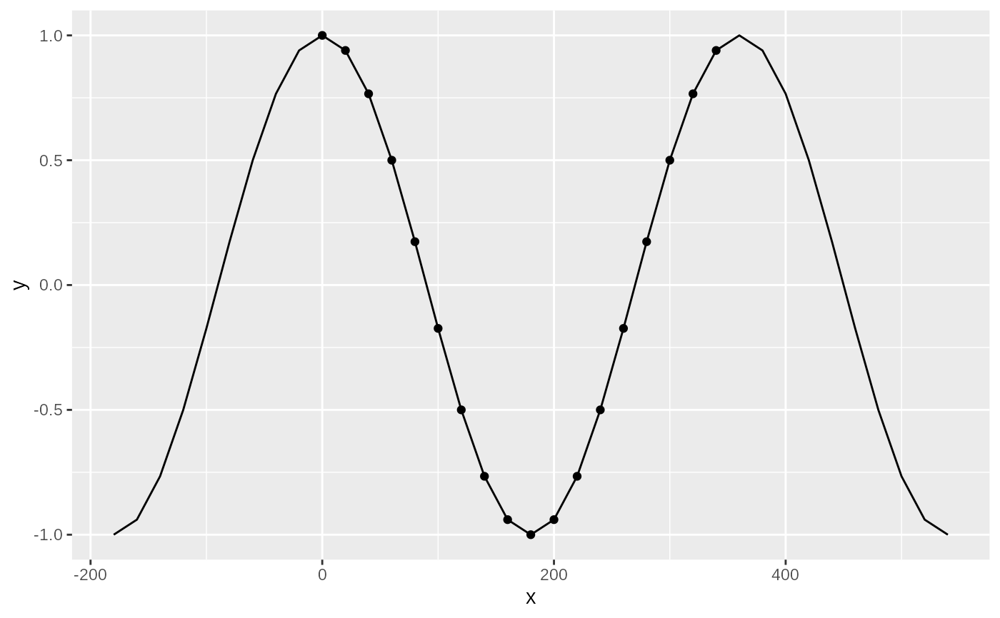
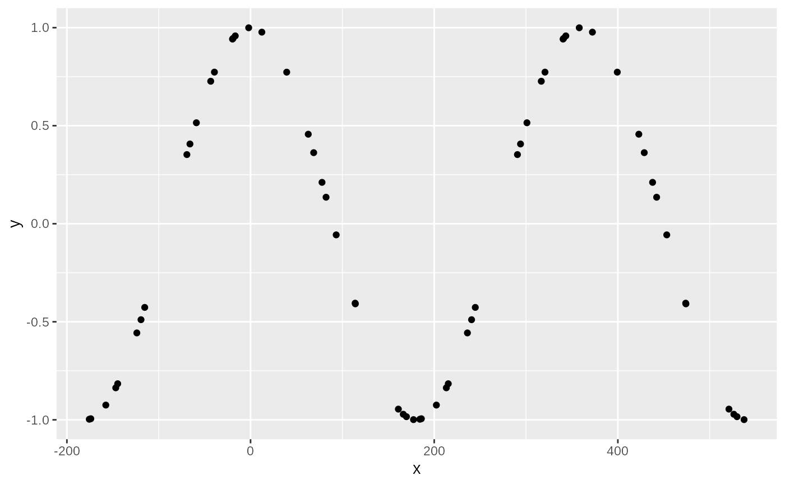

Creates a periodic object by specifying the periodic variables and their periods.
Usage
periodic(object, ...)
# S3 method for default
periodic(object, period, ...)
# S3 method for data.frame
periodic(object, ...)
setperiodic(object, ...)Arguments
- object
the object to coerce to periodic
- ...
name-value pairs of expressions defining the period
- period
a numeric vector whose range defines the period
Value
An object of subclass periodic_df or periodic_v.
If object is of class data.table, then it will modify the object by
reference. To modify this behaviour, use
options(ggperiodic.data.table.copy = TRUE). setperiodic() will modify a
data.table by reference bypassing the global option.
Examples
library(ggplot2)
x <- seq(0, 360 - 20, by = 20)
df <- data.frame(x = x, y = cos(x*pi/180))
df_p <- periodic(df, x = c(0, 360))
ggplot(df_p, aes(x, y)) +
geom_line() + # periodic data
geom_point(data = df) # non periodic data
 # Extend domain
ggplot(df_p, aes(x, y), x = c(-180, 540)) +
geom_line() +
geom_point(data = df)

# with non regular intervals
x <- runif(30, 0, 360)
df <- periodic(data.frame(x = x, y = cos(x*pi/180)),
x = c(0, 360))
ggplot(df, aes(x, y), x = c(-180, 540)) +
geom_point()

# Extend domain
ggplot(df_p, aes(x, y), x = c(-180, 540)) +
geom_line() +
geom_point(data = df)

# with non regular intervals
x <- runif(30, 0, 360)
df <- periodic(data.frame(x = x, y = cos(x*pi/180)),
x = c(0, 360))
ggplot(df, aes(x, y), x = c(-180, 540)) +
geom_point()
